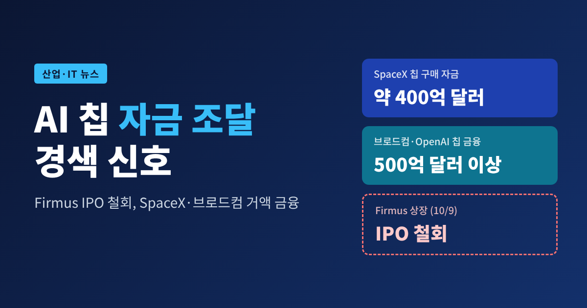
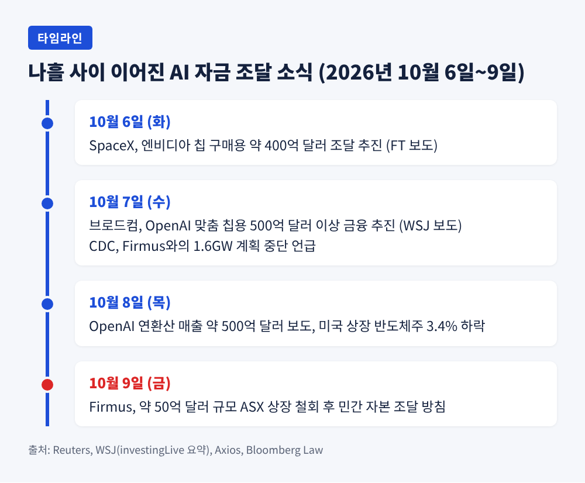
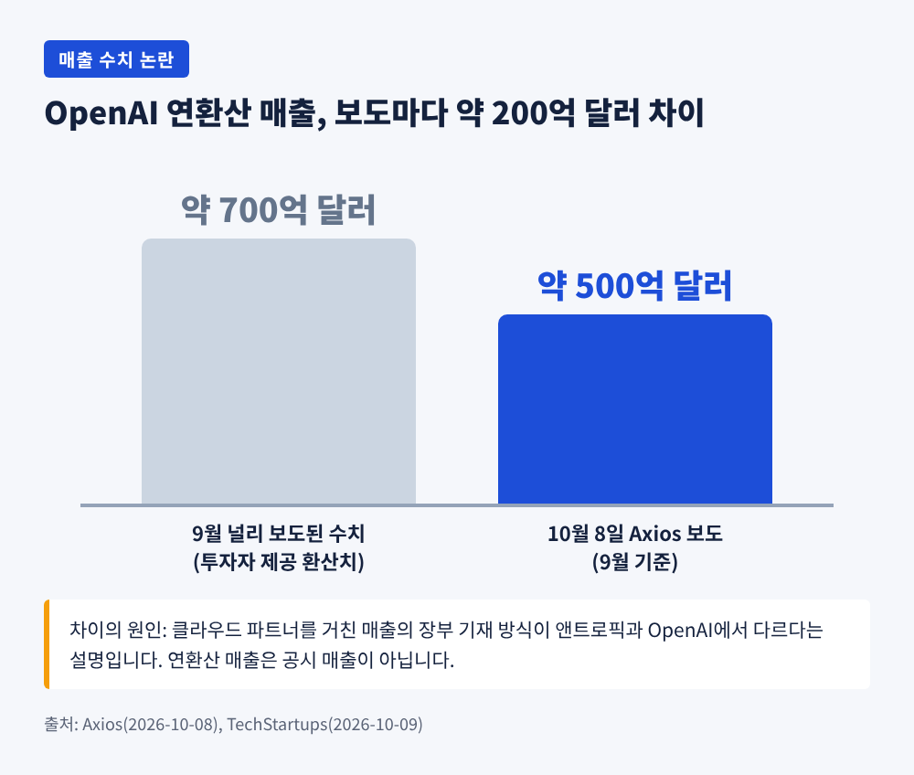
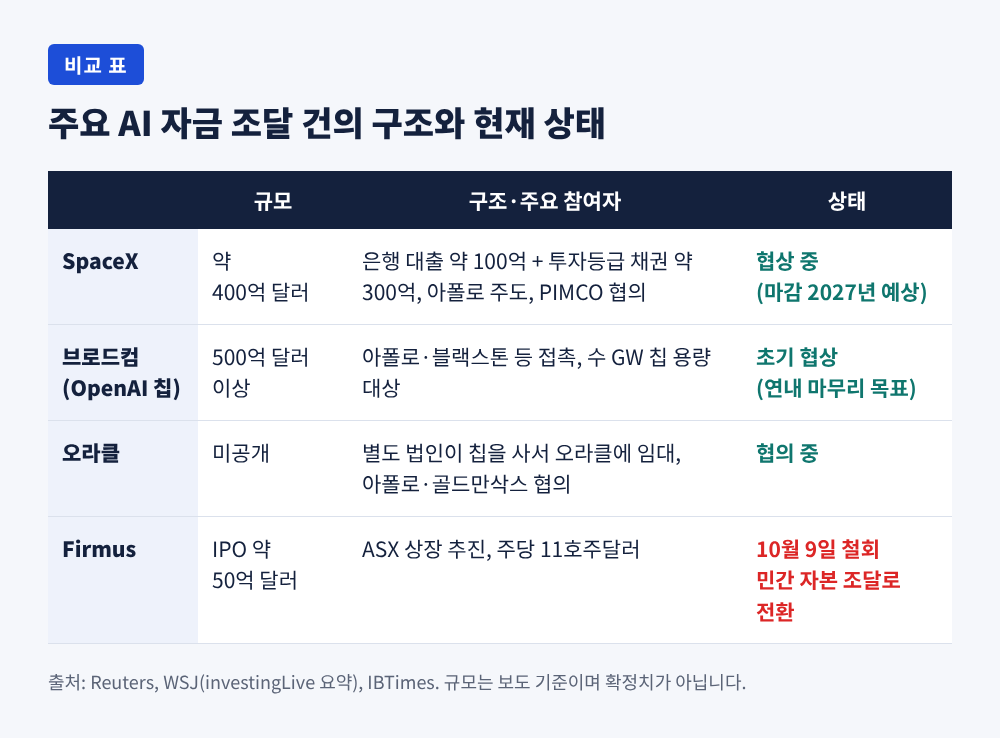
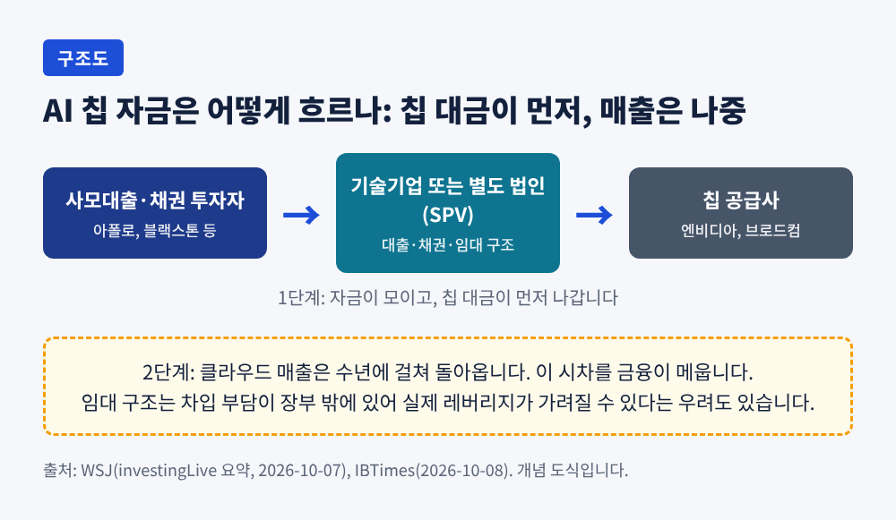
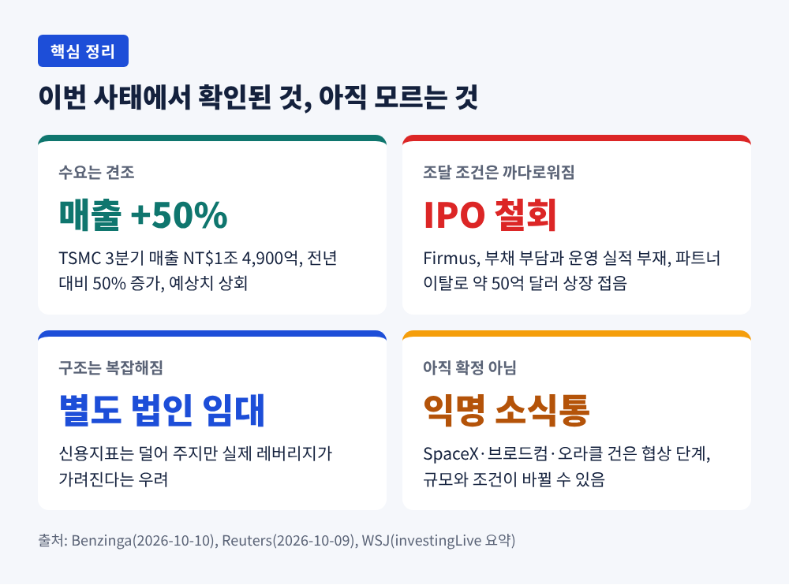

오늘은 지난 한 주 사이 잇달아 나온 AI 하드웨어 자금 조달 소식을 정리해 보려 합니다.
엔비디아가 후원하는 호주 데이터센터 업체 Firmus가 약 50억 달러 규모 상장을 접었고, 같은 시기 SpaceX와 브로드컴은 수백억 달러를 빚으로 마련하려 나섰습니다.
세 사건을 한 줄로 묶으면, AI 투자가 멈춘 것이 아니라 돈을 대는 조건이 까다로워지기 시작했다는 이야기입니다.
10월 6일 파이낸셜타임스(FT)가 SpaceX의 자금 조달 소식을 먼저 전했습니다.
엔비디아 AI 칩을 사기 위해 약 400억 달러를 마련하려 한다는 내용입니다.
로이터 인용 보도에 따르면 구성은 은행 대출 약 100억 달러, 투자등급 채권 약 300억 달러입니다. 사모대출 대형사 아폴로가 주도할 것으로 예상되고, 세계 최대 채권 운용사 PIMCO도 협의에 있다고 합니다. 마감은 2027년으로 점쳐집니다.
다음 날인 7일에는 월스트리트저널(WSJ) 단독 보도가 이어졌습니다.
브로드컴이 OpenAI와 함께 개발 중인 맞춤형 칩을 위해 500억 달러 이상의 금융을 추진하고, 아폴로와 블랙스톤 등에 접촉했다는 내용입니다. 오라클도 아폴로·골드만삭스와 대규모 칩 구매 자금을 논의 중이라고 전해졌습니다. 두 건 모두 초기 협상 단계이고 규모는 바뀔 수 있습니다.
반면 9일 금요일에는 다른 장면이 나왔습니다.
Firmus가 호주증권거래소(ASX) 상장을 철회하고 민간 자본으로 방향을 틀었다고 발표한 것입니다. 공모가는 주당 11호주달러, 주식 가치는 300억 달러대로 8월 라운드(약 105억 달러)의 거의 세 배였습니다. 부채까지 더한 기업가치는 약 600억 달러로 계산됐습니다. 성사됐다면 올해 전 세계 4번째 규모의 공모였을 것이라고 로이터는 전했습니다.

핵심은 규모입니다.
WSJ는 AI 군비 경쟁이 기업 현금흐름과 채권시장만으로는 감당하기 어려울 만큼 비싸졌다는 취지로 분석했습니다. 아마존웹서비스와 오라클 같은 클라우드 사업자가 이미 수천억 달러 채권을 발행했고, 공공 채권시장이 한계에 다다랐다는 지적도 함께 실렸습니다.
모건스탠리는 AI 인프라가 2028년까지 외부 조달 자금 1조 5,000억 달러를 필요로 할 것으로 추산합니다.
예전에는 대형 기술기업이 영업현금으로 서버를 샀습니다. 지금은 사모대출 펀드와 투자등급 채권, 별도 법인을 거친 임대 구조까지 동원합니다.
오라클이 논의 중인 구조가 대표적입니다. 투자자들이 별도 법인을 세워 칩을 사고, 이를 오라클에 장기 임대하는 방식입니다. 오라클의 장부에 부채가 바로 늘지 않는다는 장점이 있습니다. 다만 신용지표를 덜어 주는 대신 실제 차입 부담이 어디 있는지 가려진다는 우려도 따라옵니다.
이 구조가 필요한 이유는 시차에 있습니다. 칩 값은 먼저 나가고, 클라우드 매출은 몇 년에 걸쳐 들어옵니다. 그 간극을 누군가 메워야 합니다.
Firmus의 좌초를 AI 거품 붕괴의 신호로 읽기는 이릅니다.
로이터가 전한 철회 사유는 개별 요인이 컸습니다. 투자자들은 부채 부담과 AI 데이터센터 운영 실적의 부재를 걱정했습니다. 7일에는 CDC Data Centres 대표가 1.6GW 규모 'AI 팩토리' 공동 개발 계획이 더는 진행되지 않는다고 밝혔고, 투자자들이 주문을 빼기 시작했습니다. 기존 투자자가 상장 첫날부터 물량의 절반 넘게 팔 수 있는 조건도 부담이었다고 합니다.
회사 측은 가격 인하를 검토했으나 민간 라운드를 택했습니다. 블룸버그는 최대 30억 달러를 기존 투자자에게서 구할 수 있다고 보도했습니다.
시장의 평가는 날카로웠습니다. 한 자산운용사 관계자는 "The market has spoken"이라 말했고, 다른 시장 전문가는 "an important reality check for the AI investment boom"이라 짚었습니다.
한편 SpaceX 건에는 다른 쟁점이 붙습니다.
머스크는 6월 860억 달러 규모의 IPO를 마친 뒤, 8월에는 자사 데이터센터를 엔비디아 하드웨어로만 채우겠다고 밝혔습니다. 엔비디아는 8월 10일 아폴로·블랙스톤·KKR 등과 5,000억 달러 이상을 동원하려는 AI 인프라 금융 플랫폼 협력을 발표한 바 있습니다. 한 분석 매체는 엔비디아가 공급자이자 SpaceX 주주이고 금융 파트너이기도 하다는 점을 짚으며 금융 조건을 면밀히 봐야 한다고 지적했습니다. 칩을 파는 쪽이 돈이 도는 구조에 여러 겹으로 얽혀 있다는 뜻입니다.
여기에 심리 변수가 겹쳤습니다. 8일 Axios는 OpenAI의 9월 연환산 매출이 약 500억 달러로, 9월에 널리 알려진 700억 달러보다 약 200억 달러 적다고 보도했습니다. 다만 이는 매출이 줄었다는 뜻이라기보다, 클라우드 파트너를 거친 매출을 장부에 어떻게 적느냐의 차이에서 비롯됐다는 설명이 붙습니다. 앤트로픽은 고객이 클라우드사를 통해 낸 금액 전체를 매출로 잡고 클라우드사 몫을 비용 처리하는 반면, OpenAI는 일부 파트너 매출에서 자기 몫만 기록한다는 것입니다. 그럼에도 로이터에 따르면 그날 올해 80% 넘게 오른 미국 상장 반도체주는 3.4% 내렸습니다.


돈을 빌리는 쪽은 기술기업입니다. 속도가 곧 경쟁력이라, 조달 방식이 복잡해지더라도 칩을 먼저 확보하려 합니다.
돈을 대는 쪽은 아폴로·블랙스톤 같은 사모대출 큰손입니다. 이들은 채권시장이 한계에 다다랐다는 지적 속에서 새로운 수요처가 생겼다고 봅니다.
공급자인 엔비디아는 칩이 팔리는 한 수혜자입니다. 그러나 자금이 막히면 가장 먼저 영향을 받는 곳이기도 합니다.
주식시장 투자자는 가장 마지막에 위험을 가늠하는 자리에 있습니다. Firmus 공모에서 보듯, 가격이 지나치게 앞서가면 시장은 거절할 수 있습니다.

확인해 둘 점이 몇 가지 있습니다.
SpaceX와 브로드컴·오라클 건은 모두 익명 소식통에 기댄 보도이고, 당사자들이 확정한 것이 아닙니다. 협상이 무산되거나 조건이 바뀔 수 있습니다.
Firmus의 규모와 기업가치도 매체마다 통화 표기와 수치가 다릅니다. 이 글에서는 로이터와 블룸버그가 공통으로 전한 범위를 따랐습니다.
SpaceX 채권이 유통시장에서 투기등급에 가깝게 거래된다는 번역 기사 내용은 단일 소스라 본문에서 제외했습니다.
수요 자체가 꺾였다는 증거도 아직 없습니다. TSMC는 3분기 매출이 NT$1조 4,900억(약 467억 달러)으로 전년보다 50% 늘었다고 밝혔습니다. 시장 예상치(NT$1조 4,600억)도 웃돌았습니다.

앞으로 몇 주 동안 볼 대목은 세 가지입니다.
첫째, SpaceX와 브로드컴·오라클의 금융이 실제로 닫히는지, 닫힌다면 금리와 조건이 어떤지입니다. 한 분석 매체에 따르면 10년물 국채금리가 5.3% 안팎이어서 조달 비용이 가볍지 않습니다.
둘째, Firmus가 민간 라운드에서 얼마를 어떤 가치로 받는지입니다. 관계자는 나스닥 상장을 예상했지만 회사는 언급을 피했습니다.
셋째, 앤트로픽 등 대형 AI 기업의 대규모 상장 시도가 이번 분위기에서 어떤 평가를 받는지입니다. 로이터는 앤트로픽이 최대 1,000억 달러 규모 IPO를 추진 중이라고 전했습니다.
정리하면 이렇습니다.
AI 칩을 사려는 돈은 계속 커지고 있고, 그 돈을 대는 쪽은 규모와 신용, 실적을 더 꼼꼼히 따지기 시작했습니다.
"AI 투자의 문이 닫힌 것이 아니라, 통과 조건이 높아진 것"에 가깝습니다.
다음 분기 실적 발표 때 이 조건이 얼마나 유지되는지가, 올해 남은 시간의 가장 큰 관전 포인트가 될 것입니다.
※ 이 글은 공개된 보도를 정리한 해설이며 특정 종목에 대한 투자 권유가 아닙니다. 투자 판단과 책임은 본인에게 있습니다.
참고 보도: Reuters(The Star 재게재, 10/7·10/9), Bloomberg Law(10/8), WSJ 요약(investingLive, 10/7), IBTimes(10/8), Axios(10/8), Computing(10/9), TIKR(10/7), 아시아경제(10/7), Benzinga(10/10)